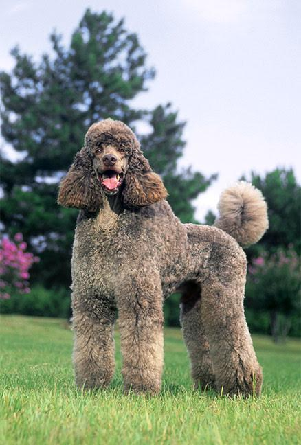
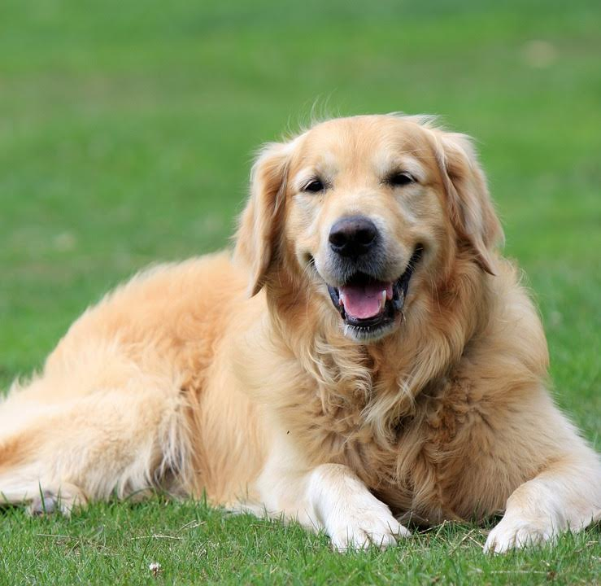
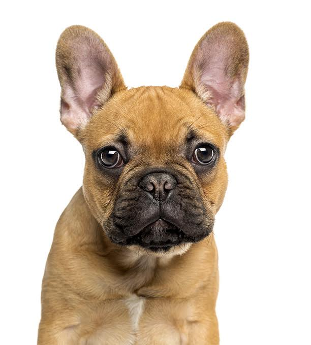

Hello, my name is Morgan Allen and I am a dogaholic. My love for dogs is out of control. If I could play with all of the dogs in the world I would! Since I can’t play with them all, I have deicded to make a website to let people know about my love of dogs and share some of my favorite types of dogs.
A Haiku About Dogs
I love my doggies.My love for dogs started from a very young age. While I could not have any dogs when I was younger, due to my allergy to them, I was always very envious of all my friends who had dogs. I was finally able to convince my parents when I was seven to get a poodle since I was not allergic to them. They were convinced and from that point on, we have always had many dogs running around our house.
I hope from reading my page, if you are a dog lover, you will enjoy these fun facts about my favorite dogs and, if you aren’t a dog lover, you will be converted to a dogaholic just like me!
| Type of Dog | Why I Love Them | Pictures |
|---|---|---|
| Poodles | Poodles are a personal favorite breed of mine. Not only are they an ancient breed who were bred for hunting but they are allergy-friendly! This could be my favorite fact since I am unfortunately allergic to dogs which is why I have poodles myself! They are not only incredibly smart but they are also adorable to play with. |  |
| Golden Retrievers | Golden Retrievers make for great family dogs and are considered a very popular breed of dogs in America! They are always up to play and love to fetch. They have great tracking and smelling abilities but can also make great therapy dogs. |  |
| Cavalier | These small yet adorable dogs are also one of my favorites! While it originated from the United Kingdom it has become very popular in America makings its way up the list of most popular dogs. Known as a great dog for kids since it is generally a loving and affectionate breed of dogs which fit perfectly in your lap! | |
| French Bulldog | These cute dogs are the perfect lap dog! While it is commonly thought these dogs are from France, while in fact the French bulldog did not originate from France. They are very affectionate and friendly dogs who were bred to be companions. They get along great with not only humans but also most other types of dogs! |  |
I hope you have learned some fun facts about dogs, especially my favorite types of dogs! They make for great animals and even better life long companions!
Image Sources: Poodle Image Golden Retreiver Image Cavalier Image French Bulldog Image